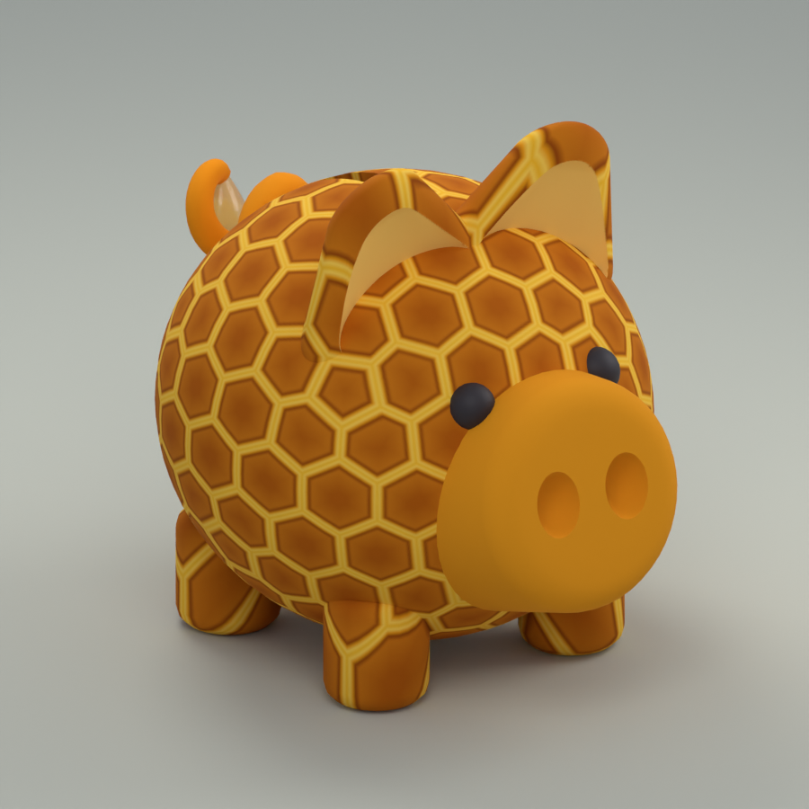
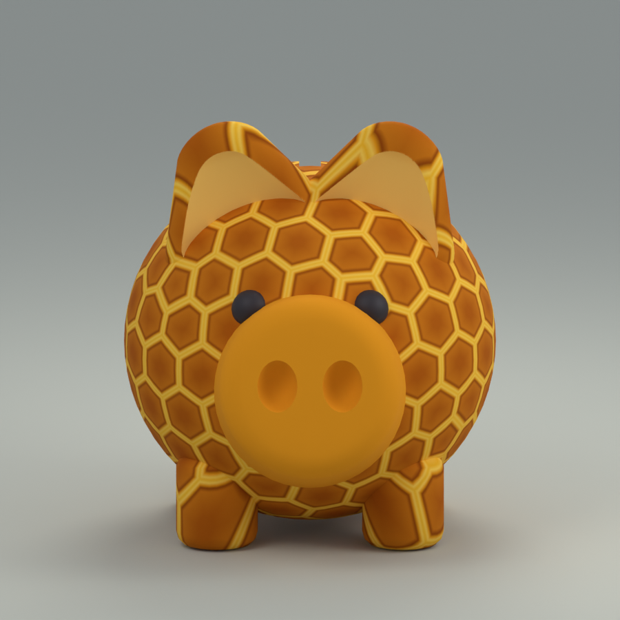
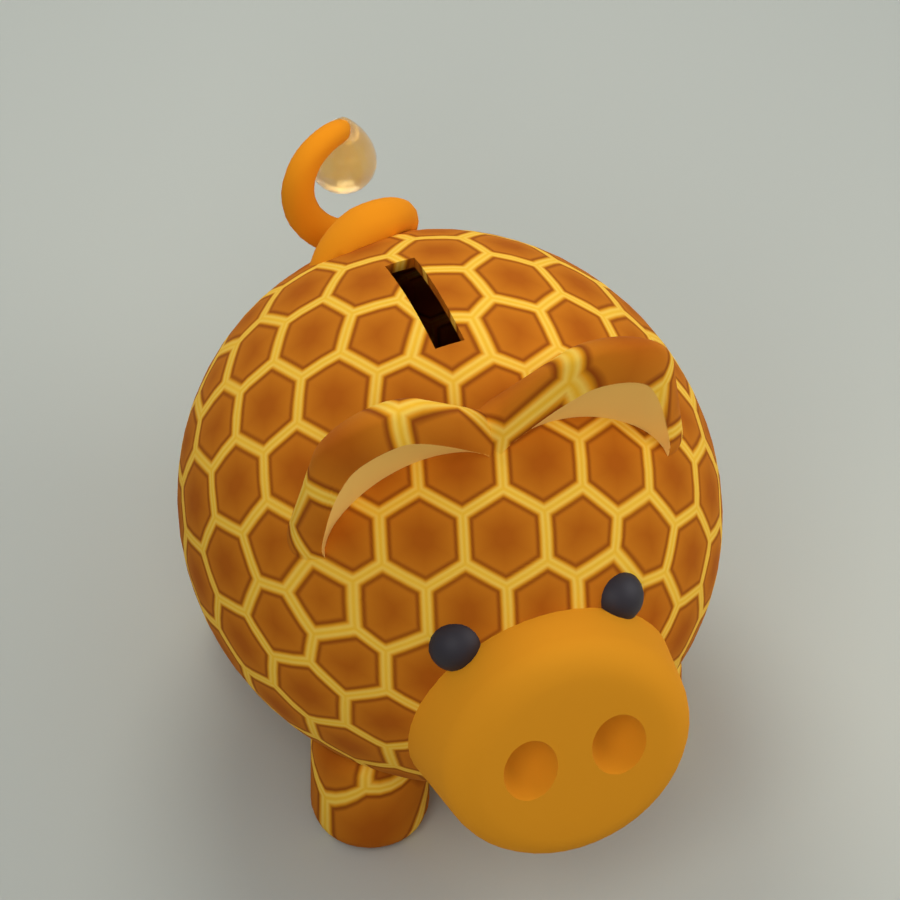
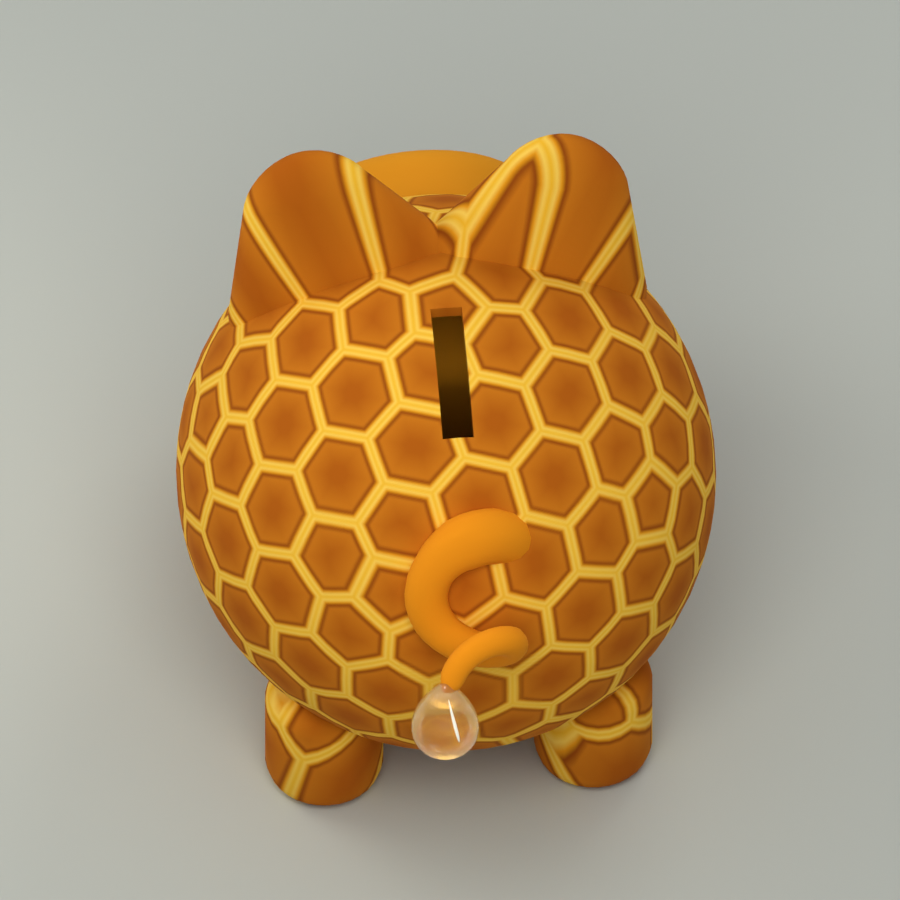
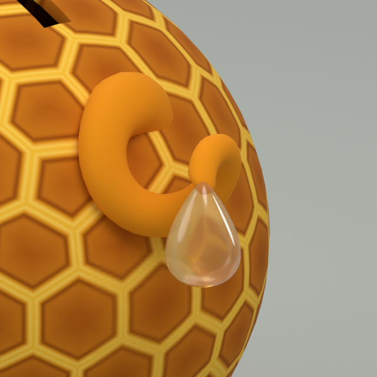

RARE · HEXAGONAL HONEYCOMB
Honeycomb
Amber honeycomb cells with golden wax rims. Current closed-back body retained, with a solid orange tail and a honey droplet; no dots or glow.
Eight meshes · Updated honey droplet · body width 12 studs · Blender previews




